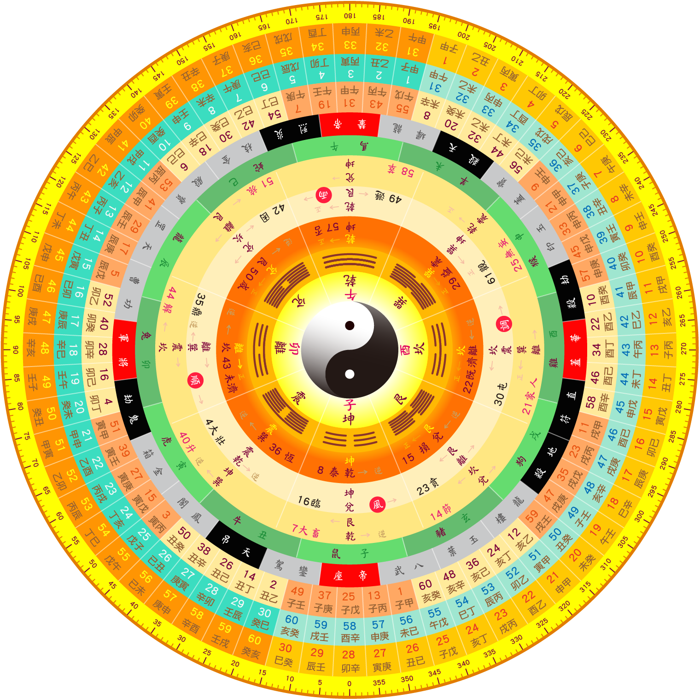

<!DOCTYPE html>
<html>

<head>
    <title>Luopan</title>
    <script src="https://ajax.googleapis.com/ajax/libs/jquery/1.11.3/jquery.min.js"></script>
    <script>
    $(function() {

        reset_luopan();
        resize_tensvg();
        luopan.set_transform(0.035); //修正刻度起始位置
        window.onresize = function(event) {
            resize_tensvg();
            reset_luopan();
        }

        //auto_run();

        /*
        window.setTimeout(function() {
            stop_run();
        }, 5000);
        */

        //alert('init jquery');

        //取得mouse每次的距離移動數據
        var my_mouseX = 0; //初始0
        $('body').mousemove(function(e) {

            //console.log(e.clientX);
            var mouse_now_X = e.clientX;
            //每次的移動點
            var move_number = 1;

            //轉動羅盤
            if (mouse_now_X > my_mouseX) {
                luopan.deg_number -= move_number;
                //luopan.set_transform(move_number);
            } else {
                luopan.deg_number += move_number;
                luopan.set_transform(move_number);
            }
            //記錄目前座標數據
            my_mouseX = mouse_now_X;
        
        }).onmouseover(function(e) {
            var mouse_now_X = e.clientX;
            //記錄目前座標數據
            //my_mouseX = mouse_now_X;
        });


    });

    var luopan = new Luopan('luopan');

    var auto_run = function() {

        window.setInterval(function() {
            //luopan.set_transform(0.125);
            luopan.set_transform(0.060);
        }, 60);

    }

    var stop_run = function() {

        clearInterval(auto_run());
        console.log('stop_run');

    }


    function Luopan(obj_id) {

        var w_win = $(window).width();
        var h_win = $(window).height();
        this.luopan_id = obj_id;
        this.deg_number = 0;
        //alert('new LuoPan');
    }

    Luopan.prototype.set_transform = function(number) {

        var deg = 'rotate(' + this.deg_number + 'deg)';
        $('#' + this.luopan_id).css('transform', deg);
        //alert('set_transform');
        //this.deg_number = number;

    };

    function resize_tensvg() {

        var svg_id = 'tensvg';
        var w_id = 'wline';
        var h_id = 'hline'
            //alert('123');
        var w_win = $(window).width();
        var h_win = $(window).height();
        //alert(h_win);
        var w_svg = w_win - 12; //設寬
        var h_svg = h_win - 12; //設高
        //alert(h_svg);
        w_svg = w_win - 0;
        h_svg = h_svg - 0;

        var my_style = 'stroke:#ff0000;stroke-width:1';
        my_style = 'stroke:#0080ff;stroke-width:1'; //設藍色

        var my_svg = $('#' + svg_id);
        var my_w = $('#' + w_id);
        var my_h = $('#' + h_id);

        //my_svg.attr('width', w_svg + 'px').attr('height', h_svg + 'px'); //設定svg寛高

        //設定svg寛高
        my_svg.attr({
            width: w_svg + 'px',
            height: h_svg + 'px',
        });


        my_w.attr({
            style: my_style,
            x1: "0",
            y1: "50%",
            x2: "100%",
            y2: "50%",
        });

        my_h.attr({
            style: my_style,
            x1: "50%",
            y1: "0",
            x2: "50%",
            y2: "100%",
        });

    }

    function TenLine(win_w, win_h) {
        this.win_w = win_w;
        this.win_h = win_h;
        return this;
    }

    function reset_luopan() {

        var w_win = $(window).width();
        var h_win = $(window).height();
        console.log('w_win center:' + w_win / 2);
        console.log('h_win center:' + h_win / 2);

        var my_style = 'position: absolute; z-index: -1; top: －1px; left: 0px; transform: rotate(0deg);';
        var id = 'luopan';
        var luopan = $('#' + id);

        //取得left要位移的位置
        var my_left = w_win - h_win;
        console.log('my_left:' + my_left);
        my_left = (my_left + 30) / 2; //修正誤差
        my_style = 'position: absolute; z-index: -1; top: 9px; left: ' + my_left + 'px; transform: rotate(0deg);';

        h_win = h_win - 20; //留一些邊

        luopan.attr({
            style: my_style,
            width: h_win + 'px', //設定寛為營目同高
        });


        console.log('luopan width center:' + luopan.width() / 2);
        console.log('w_win:' + w_win);
        console.log('luopan width:' + luopan.width());

    }
    </script>
    <style>
    body {
        margin: 5px;
        /*
        background: #888888;
        */
    }
    
    .luopan {
        border: 0px solid #888888;
        height: 0px;
    }
    </style>
</head>

<body>
    <div class="luopan">
        <!---->
        
    </div>
    <div class="tensvg">
        <svg id="tensvg" height="10px" width="10px">
            <!--橫線-->
            <line id="wline" />
            <!--直線-->
            <line id="hline" />
        </svg>
    </div>
</body>

</html>